THE BAYESIAN SCENE
- Tunir Ghosh
The world that we see and perceive is very much built
on probability. Each of our actions are somewhat dependent on our idea of
perceptions and predictions which touches the intuitive aspect of probability.
From simple guesses in an MCQ to the most advanced scientific experiments or
computer algorithms, everything has a touch of probability swaying their fate.
However, most of us bother very little to understand the motivations,
formalisms and necessity of studying these fields. This article would be an attempt
to cover the basics of probability the way it is taught nowadays and further
delve into the idea of Bayesian update a method for tuning and refining our
knowledge of the known world.
The Basics
So, let’s start with the oldest and simplest view of probability. We have a set of all possible outcomes (observable conclusions) of an experiment (a phenomena under observation). We call this set the EVENT SPACE. So, in this context we would define the probability or likelihood of an event, i.e., how likely is it to get a particular event as an outcome when the experiment is conducted.
Now that we have the qualitative description under our belt, we take a look at the qualitative factor, we should start to quantify the probability by relating it with some measurement.
This gives rise to the two schools of thoughts of probability, the frequentist and the Bayesian, we for the simplicity of consideration at this moment will consider the frequentist regime and slowly move into the Bayesian idea as our primary interest.
So, both the schools agree that the probability is a function P that relates an event from the event space and to a real number, in particular in the interval [0,1].
The frequentists say that this function can be defined using the formula:
P(E)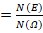
Here N(...) denotes the no. of elements of times an element occurs. So it is a ratio of the no. of times the event occurs to the total frequency of all possible outcomes. The ratio as we can clearly see falls in the interval [0,1]. This acts as a pretty good estimator of how frequently an event has happened and thus by extension how likely it is to happen in a future reproduction of the experiment.
Now the next notion that we would like to establish is of Conditional Probability, which bears the mathematical form,
P(A|B)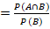
Qualitatively this measures the likeliness of event A occurring given that event B has occurred. So this assumes that overall the event B has occurred so now the event space shifts to B and the likeliness of A occurring after that would only be if the elements that A and B shared appeared as the outcome.
This is of interest as it shifts the context of probability from an absolute value standpoint and gives a way to associate the occurrence of an event A with other events, and in case the occurrence event A truly does depend on the other events we will get a substantial value for this conditional probability. Thus conditional probability helps us inspect a correlation between different events.
This propels us to study another concept, Total Probability.
Here we are again trying to check the probability of an event occurring by looking at its conditional probabilities. By formula:
P(A)=P(A|X1)P(X1) +P(A|X2)P(X2) ......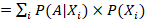
This is interesting as it removes the absoluteness of a probability and puts it at the mercy of the other events. This means that we can now probe the events on which A depends and thus we have a more complete view where we look at the occurrence of the causes to probe the likelihood of an event.
As we can see that our way of probing is becoming akin to the actual method of studying a phenomenon scientifically by probing the reasons and then through observing their effects.
Now we will take a look into the world of distributions.
So, for this let us take an example at first. Let us roll a dice where we are trying to find the probability that the sum is X, where X=2,3, 4, ...,12. This X would be what we call a random variable. A random variable maps an event to a real no. and the probability maps the R.V. to a likelihood value.
In the above case the R.V. is discrete, however for some cases the R.V. might be a continuous value or might be better represented by a continuous value, in these cases we have what we call a probability density function (p.d.f). A p.d.f. gives us the probability at a very particular value of X. Generally, the probability in such cases is aggregated over a range of X so we consider the integral 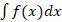.
This formulation also helps when we are performing a large number of experiments of discrete nature. The random variable albeit being discrete in nature follows the boundaries set by the overarching distribution.
This brings us to the most important ideas of this article. We delve into the idea of estimation of distribution of a data and about refinement of our knowledge(hypothesis) through Bayesian update.
Likelihood Estimation
As stated earlier every experiment with an outcome associated to a random variable follows an overarching p.d.f. So, when given a data observed in the real world, it becomes necessary to study the phenomenon and estimate the parameters of the distribution that we think best fits it.
Let us think of an experiment about tossing a coin. We need to understand the bias of the coin, i.e., the probability of getting a head or a tail. So let us consider the probability of getting a head be p.
Thus, the likelihood function will be
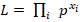 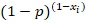
With xi being the value 0 or 1 depending on outcome of i th toss
Taking log
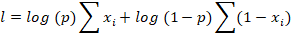
Setting the derivative of with respect to p to 0 we get the form
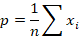
Thus, we can see that we can get the boundary by performing the experiment number of times and averaging out the result, this gives the idea of the pdf given that we know the data, i.e., it maximizes the likelihood of the given data under an expected distribution by fine tuning the variable parameters of the distribution.
Finally comes the Bayes’ theorem and the idea of Bayesian update.
Bayes’ Theorem
Let’s talk about Bayes’ theorem in a more quantitative sense at first.
The theorem says:
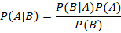
This can easily be verified from our previous description of conditional probability and isn’t of much interest here. However what interests us more is the way it talks of improving the quality of a hypothesis given a dataset.
Let’s say we have a set of hypotheses called H, with elements h1, h2, h3....
Now we are given a dataset D.
So we have the Bayes’ theorem taking the form:
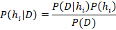
In this case as we can see we are trying to consider the probability of the possible hypotheses to find the actual underlying possible hypotheses from the set.
Now in this case we can see that we are seeing the hypotheses in the context of the data D. The P(D|hi) gives us the likelihood of the data under the assumption of the hypothesis hi and the P(hi) gives us the prior probability, a probabilistic weight to the hypothesis assigning it a higher or lower importance.
The severe con of this system however lies in this prior probability as this perceived importance has no mathematical basis and is often reliant on previously observed frequency or on domain experts and thus might actually be very wrong.
There also exists another aspect of the formulation, it shows that in the context of data if we consider uniform prior probability for all the hypotheses, then the likelihood function is what determines the posteriori (resultant) probability.
Also, we can form an idea of updating our knowledge with an update in data.
Let’s say we have an update in data and have found a new dataset D’.
Thus, finding the importance of the hypothesis from the new dataset becomes
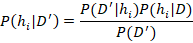
This as we can see now replaces the weight of the hypothesis with a weight that we have previously observed in context of another dataset that might justify this dataset or observation to some extent.
Conclusions
Thus, we can see the several forms and ways of how probability acts as a means of studying and understanding statistically the relation between data/observations and honing our hypotheses from the received observation to finally resolve the best possible hypotheses.